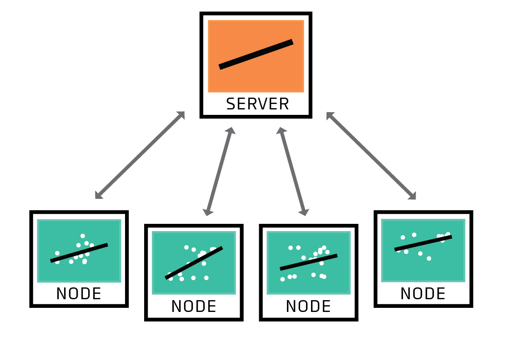
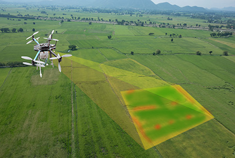

|
Dawood Wasif I’m a second-year Ph.D. student in Computer Science at Virginia Tech, advised by Dr. Jin-Hee Cho in the Trustworthy Cyberspace Lab. My research centers on responsible and secure AI, with a focus on federated learning, human-in-the-loop reinforcement learning, uncertainty-aware decision-making, and multi-agent LLM systems. I’m particularly interested in building scalable and trustworthy machine learning systems for real-world applications in autonomous vehicles, cloud infrastructure, and defense technologies. Before joining Virginia Tech, I was a Guest Scientist at the Chair of Data Science in Earth Observation at Technical University of Munich (TUM), where I worked on uncertainty quantification in remote sensing. I earned my Bachelor’s degree in Computer Science from the National University of Sciences and Technology (NUST), where I led AI-for-Social-Good initiatives across climate resilience, healthcare, and disaster response. |
{kind=link}
News
|
Selected PublicationsI'm interested in computer vision, remote sensing, and uncertainty quantification. My research focuses on answering questions about why, what, and how using Explainable AI and effective Uncertainty Quantification tools. |
|

|
Empirical Analysis of Privacy-Fairness-Accuracy Trade-offs in Federated
Learning: A Step Towards Responsible AI
Dawood Wasif, Dian Chen, Sindhuja Madabushi, Nithin Alluru, Terrence J Moore Jin-Hee Cho AAAI/ACM AIES, 2025 We highlight context-dependent trade-offs and offer guidelines for designing FL systems that uphold responsible AI principles, ensuring fairness, privacy, and equitable real-world applications. |
|
|
Towards a Benchmark EO Semantic Segmentation Dataset for Uncertainty
Quantification
Dawood Wasif, Yuanyuan Wang, Muhammad Shahzad, Rudolph Triebel, Xiaoxiang Zhu IGARSS, 2023 We present a synthetic dataset rendered from 3D mesh and LoD2 models of Berlin, Germany and use it to compare baseline methods for semantic segmentation and uncertainty quantification. |
|

|
Extraction of Rice Phenological Metrics Using Temporally Correlated
Multispectral Drone Imagery
Dawood Wasif, Muhammad Qasim Khan, Malik Zeeshan Ahmad, Ramesha Murtaza Zuhair Zafar, Muhammad Shahzad, Karsten Berns, Muhammad Moazam Fraz SITIS, 2022 We collected a novel multispectral dataset of rice crops to develop an automated statistical model of predicting the growth stages of various crops. |
Selected ProjectsMy projects revolve around state-of-the-art computer vision and natural language processing technologies. Explore them listed below: |

|
AI Job Search Agent
Dawood Wasif, Alex Aggarwal July 2025 Developed an AI-powered job automation platform using FastAPI, GPT-4, and Pinecone for semantic job matching, ATS-optimized resume rewriting, and dynamic cover letter generation with full-stack integration via React and Supabase. |
|
BizFlow: Hybrid Workflow Assistant for Enterprise Ops
Dawood Wasif March 2025 Designed an enterprise-ready conversational assistant using Rasa Pro with hybrid transactional
and RAG-based flows, enabling real-time business process automation (e.g., IT tickets, HR queries, and expense
submissions).
|
|

|
Real-time
Exclusion Zone Alert System
Dawood Wasif August 2023 Human detection and tracking using YOLOv8 and raising alerts and updating statistical reports on entrance into a danger zone area drawn using a polygon selector GUI. |

|
VS Code Extension for
Development Workflow Automation
Dawood Wasif, Muhammad Qasim Khan, Malik Zeeshan Ahmad Jan 2022 VS Code extension that uses OpenAI Codex and other open source models to generate, autocomplete, and search for source code, and provide documentation, and git commit messages |

|
Content Based Image
Retieval Search
Dawood Wasif, Muhammad Qasim Khan, Malik Zeeshan Ahmad May 2021 Reverse Image Search Tool based on metadata tags generated using hierarchical clasification and image features using customized Efficientnet as a feature extractor and Milvus as a vector search database. |
Thank you for visiting my site!